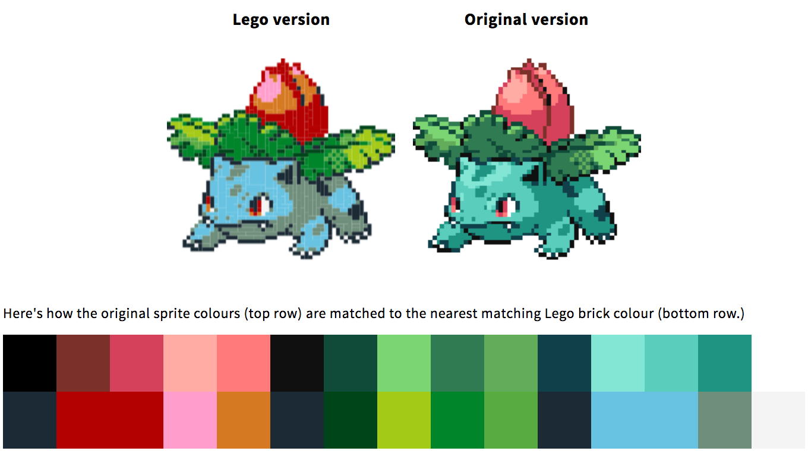
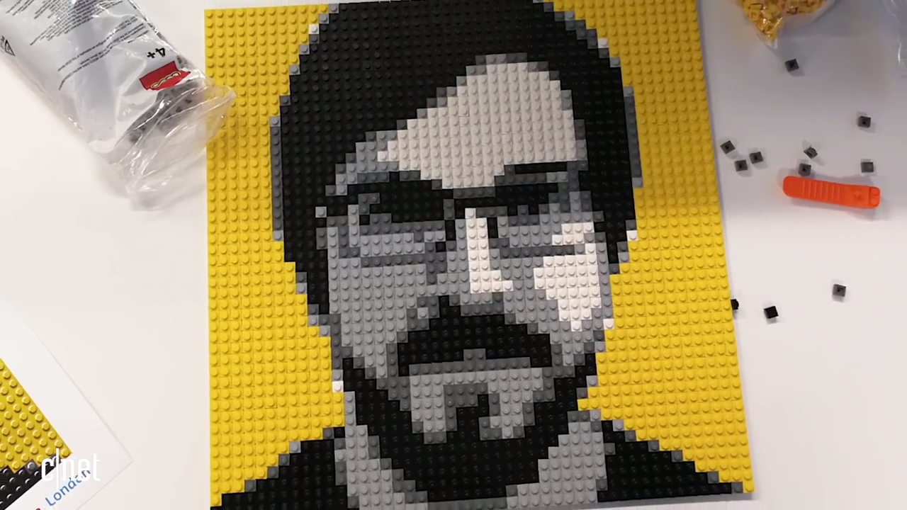
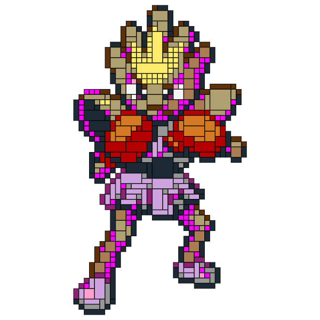
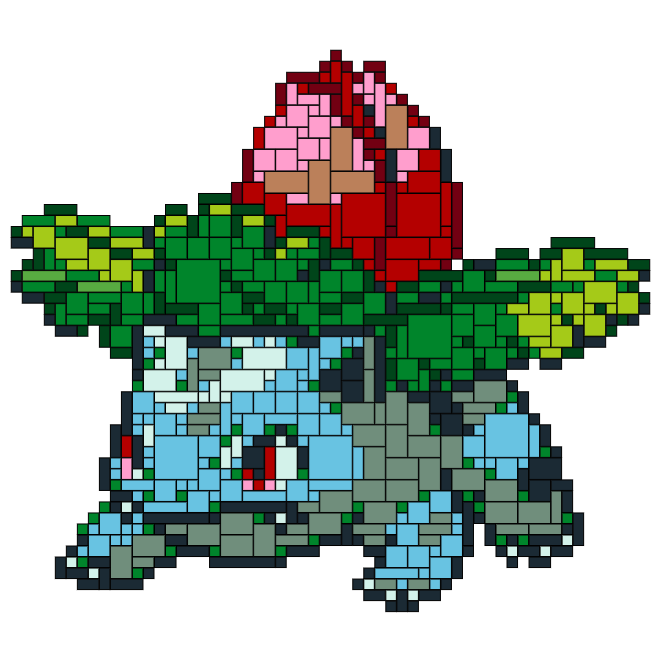
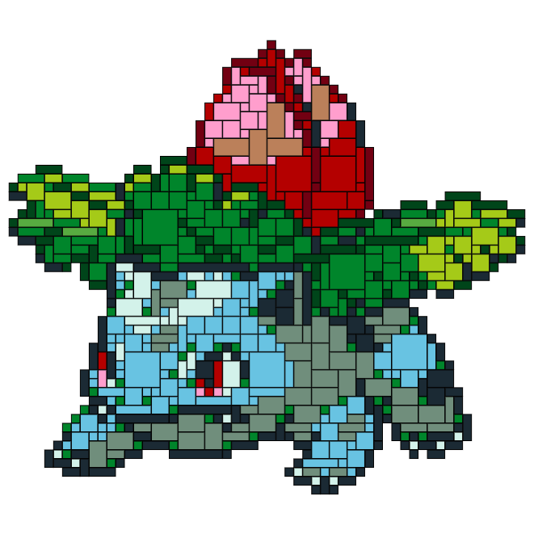

PokéProject: Adventures with LEGO® Bricks
Using JavaScript and HTML5 canvas elements to convert images into 2 dimensional LEGO brick plans.
Part 1: From image sprite to pixel art.
What’s the difference between the image sprites included in the original Game Boy games and Retro Pixel art? If you ask me, it’s just a matter of scale — scale the images up, and suddenly it’s art.
Art, for reference.
But simply printing this ‘pixel art’ out at a large size isn’t really impressive. After all, why bother? — you could just as easily go with a higher resolution version of the same image. You could print a version of the pixel art on something the size of a postage stamp, but just as easily print it on a sheet of paper, or on a large poster — there’s no constraints on standard printing, after all. What’s more visually impressive is mixing media. If you made your pixel art out of lego for example; well, that’s more interesting.
üí° From this idea, Pok√©Project: LEGO Edition was born.
LEGO bricks come in a variety of colours and with a fairly rigid set of dimensions. The smallest of these is the 1x1 brick, approximately 8mm square in size. If we could recreate a 32x32 pixel sprite that’d give us something just over 25cm square in size, and a 96x96 sprite would be just under 77cm square, which sounds like it could make some impressive pieces for wall art.
So, how to make this a reality?
Data sources and harvesting
The first thing I needed to do was discover what LEGO bricks were available, and in what colours. Information for the available colours is readily available from a variety of sources, including RGB and Hex colour mappings, so it was easy enough to grab that data.
To find out what bricks were actually available to purchase (given that a lot of bricks are not available to purchase individually and on demand) I had to visit the official LEGO Pick-A-Brick service, and essentially scrape the entirety of their search results to collate a data store of the available bricks for use in my calculations.
I’ve made the results of my data harvesting efforts available on GitHub.
Palette mapping
The original Game Boy Colour could support over 32,000 colours [source], but LEGO Bricks only come in 40 or so [source]. The first challenge was to map those two palettes together and visualise the outcome.
Directly mapping colours to colours wasn’t especially hard to implement — and the effects weren’t too bad either.
For the first pass at this colour mapping, I used what was essentially a Euclidean distance calculation, treating the colour of each pixel in the source image as a number and finding the nearest match in the more limited lego colours palette.
Introducing… perceptual Colour Matching theory
After a little testing, it emerged that the simple colour matches being used weren’t quite up to scratch. As an example, the lightest of colours — which were quite clearly a grey, green or blue — would be matched with the light pink colour, because that’s the closest match from a programmatic point of view, or important details would get lost when there’s not a lot of contrast.
DeltaE colour matching on the left, Euclidean distance in the middle, source sprite on the right.
Fortunately lots of smart people have already figured this out and solved it several times over, and come up with standard formulas for calculating colour matches based on human perception. With the help of StackOverflow and the DeltaE library I was able to make some great improvements in the colour matching, enabling a much more nuanced palette map.

DeltaE (the 1976 version) colour matching isn’t half bad.
There are actually three versions of the DeltaE / LAB perceptual colour matching calculations, so with a little experimentation I was able to try them out until I found one that seemed to work well across the board.
Expanding the data set
It was at this point in time I stumbled across an interesting piece of information — not all of the available LEGO bricks are actually available through Pick-A-Brick, but many of them are available through the replacement parts service, providing you know the part id of the brick itself.
This data set was a little more difficult to put together, but it’s essentially the same principle — scraping the official LEGO website and putting it into a JSON data set for my source code to use.
The effect of this that it massively expands the available brick colours and dimensions, which in turn greatly improves the quality of the colour matching in our models.
LEGO Brick colour matching, using the available bricks from the replacement parts service.
Finally happy with the outcome of mapping sprite pixel colours to LEGO brick colours, I decided to tackle the next challenge — making efficient use of LEGO bricks.
Making optimal use of the available bricks.
By this point I’ve already mapped my colour palette of my source image to the available LEGO brick colours as described in my previous post, and now I want to move beyond simple colour trickery and onto making this idea a physical reality.
Optimal Brick calculations üí∞
Looking into the feasibility of actually purchasing LEGO bricks to make these sprites, it turns out it’s quite expensive. The bricks themselves average around £0.05 each, which puts the cost for a 64x64 pixel image at £204.80, which is extreme.
However, there’s economies to be made. If you can use fewer larger bricks to produce the same image, the effective cost-per-pixel can drop significantly, to around £0.01 per pixel, which saves quite a significant amount of cash.

Needless to say, I put a fair amount of effort into optimising expenditure.
It’s just not LEGO
In addition to the raw cost issue, it doesn’t really feel like a real project if everything is made of 1x1 bricks. That’s the kind of boring thing that an old style dot-matrix printer would output, and it doesn’t feel all that creative.
As it transpires, this is exactly what a dedicated booth in the London LEGO shop does, but I still think it’s a cop-out and I can do better.

Who really wants to place 2,304 individual LEGO bricks, anyway?
In search of prior work.
I am a lazy programmer. I would much prefer to reuse someone else’s code than spend ages trying to figure it out myself, and to this end I Googled an endless variety of phrases looking for some kind of prior work around the optimal use of LEGO bricks in a two-dimensional plane, only to come up with absolutely nothing.
I did read some fascinating articles about such things as “An approximation algorithm for finding the largest rectangle inside a non-convex polygon” and a helluva lot of posts about everything from Bin Packing to JPEG compression on StackOverflow and Wikipedia, but ultimately there’s nothing that I could find which was appropriate.
It would appear that the optimal placement of an unlimited combination of arbitrarily-sized shapes within randomly shaped containers is not a high enough priority for the Computer Science community to have already solved effectively, much to my dismay.
I was going to have to actually write the logic myself. ü§î
Writing it myself.
Changing the colours of an image with JavaScript and HTML5 canvas elements is fairly easy — you pull in the image data as an Array, and you loop through it to get the R,G,B,A values for each pixel, which you can modify on the fly. Simple enough, but it lacks understanding of pixel coordinates and any sense of neighbouring pixels.
My solution was to copy the image data into a new data structure which could easily reference its neighbours, and then for each pixel iterate through the available LEGO bricks — first to find the nearest colour match, and then to find the largest possible brick which could fit anchored at that point.
Given a few passes the outcome is quite acceptable.

1x1 Bricks versus fairly-optimal various-sized Bricks
It’s not the most optimal solution that might be technically possible, but it’s better than doing nothing at all to optimise the output.
The biggest flaw is that it effectively scans through the image, top to bottom, left to right, to try and place bricks in an optimal fashion. Logically there could be better starting points for some shapes, ones which ultimately use less bricks to complete, but such an approach requires an infeasible number of passes to optimise, and that isn’t something I even want to try.
So what’s next? Turns out there’s one more issue… a flaw in my logic.
From a theory to the real world.
PokéProject: LEGO Edition started with colour mapping and developed into a calculation of optimal brick placement, and now I’m planning to put some money on the line and actually purchase some bricks and make this project into a tangible reality.
Realistic Brick calculations
So what’s next? Turns out there’s one more issue… a flaw in my logic.
I had incorrectly assumed that all of the LEGO brick colours I’d grabbed from the internet were available as 1x1 bricks, and my ‘algorithm’ was based around that assumption. When I actually went to go and purchase those bricks… then I had a problem. And for some sprites, it was quite a problem.
I’ve highlighted the problematic pixels in these images:

Highlighting the invalid / unavailable pixels in Magenta
So, how best to deal with this issue?
I’m loathe to simply remove those pixel colours from the pool — I like what I’ve achieved with the colour matching, and besides we only have 41 LEGO colours to play with as it is — don’t want to reduce that pool any further.
My solution was to take those invalid bricks and find the next best fitting brick colour, repeatedly updating and looping through the image data and recalculating a next-best colour match for each pixel of the sprite until I had an acceptable match.
 

The same sprites with next-best colour matching for invalid pixels
Naturally, I went through quite a bit of trial and error to get to this stage — I tried selecting average pixel colours from neighbours, but that generally lost details, and I tried some complicated contrast-based comparisons to bleed similar colours into neighbouring invalid pixels, but that didn’t work well either. The simplest solution was the best — calculating a prioritised list of matching colours for each brick, and regressing through that list whenever the bricks we wanted didn’t actually exist.
Making the jump from theoretical to physical
Finally, I have a working sprite-to-lego-brick conversion tool at my disposal. It calculates nearest matching bricks, does some optimisation, and spits out a sensible shopping list of items to purchase.
Placing my order with the online LEGO store was (unfortunately) a fairly laborious process, because there doesn’t seem to be a nice bulk ordering system, but after about half an hour of manual entry I managed to get every individual brick in the basket. £37.69 paid to the LEGO store online and in the next 7–10 working days, the raw materials for my new creation should be with me.
My LEGO Pokemon sprite tool is online, if you’d like to create a pattern and see the list of Bricks for it yourself: https://www.pokeproject.co.uk/lego/
Beyond Pok√©mon üîÆ
The exciting opportunity for this project now is that I have the start of a fairly generic image-to-LEGO pattern generator, which I might evolve into a proper standalone project over the next few months. After all, wouldn’t it be fun to turn more Retro games artwork into LEGO patterns? or webcam images, or profile photos or works of art? So many possibilities!